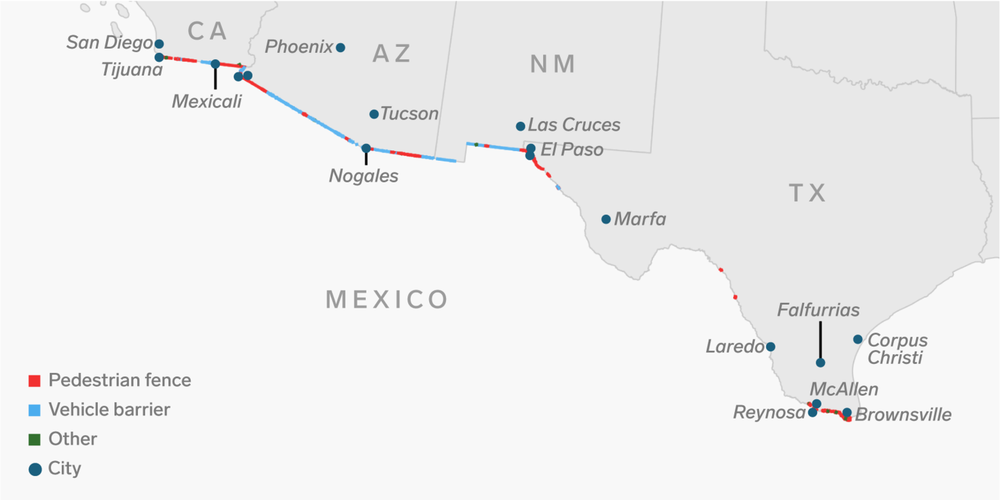

Rising death along the U.S/Mexico border
AJO, Ariz. - "A wilderness, in contrast with those areas where man and his works dominate the landscape, is herey recognized as an area where the earth and its comunity of life are untrammeled by man, where man himself is a visitor and who does not remain"
The United States / Mexico border has become a political hotspot of controversy with the Trump Administration's tightening of border security and the oppositions fight to help migrants crossing the border. The border and the land that encompasses it is an unwelcoming place fro migrants. Harsh terrain, extreme temperatures, and vicious border patrol agents operating on zero-tolerance policy make crossing a perilous feat.

Map of U.S. - Mexico border. Curtesy of Business Insider
Rather than recognizing that U.S. demand was drawing migrants and crafting proper immigration and labor policy that would take this into account. Instead the U.S. government launched a policy of “prevention by deterrence,” which aimed to make migration so difficult and dangerous that migrants would give up.
Each point on the map below represents a migrant death in Arizona. Since 1981, more than 3000 deaths have been reported and mapped by the nonprofit Humane Borders and the Pima County Office of the Medical Examiner.
Click on the numbers to zoom in to find more points
Click on the points to examine attributs about each migrant
The number of migrants dying
from extreme heat rose 55 percent
in the past 9 months after an
increase in unaccompanied children
and families trying to enter the U.S. illegally through rough terrain such as the Rio Grande valley
The battle of the aid workers
Cabeza Prieta National Wildlife Refuge, Ariz. - Four aid workers arrested while attempting to leave water for migrants crossing the border
In 2018, federal prosecutors in Arizona charged four humanitarian aid workers who left water in the desert for migrants who might otherwise suffer from exposure to the elements and thirst. In another case, the Washington Post reports that federal prosecutors dropped manslaughter charges against a border patrol agent who fired 16 times across the border, killing a Mexican boy. The aid workers face a fine and up to six months in jail.
The crimes made by these aid workers: entering the Cabeza Prieta National Wildlife Refuge without permits to leave supplies for migrants crossing into the United States.
This is not the first time the U.S. government has come after activists, however the breadth of the campaign against these workers, and the use of the Wilderness act which secured their charges of trespassing was a first. In previous, people wandering around the refuge without proper documents might be sent off with a warning. The Trump administration chose the more severe approach.
Parker Deighan, one of the four volunteers awaiting trial on a misdemeanor charge in the United States, told the New York Times, “The cases are on their surface about wilderness. It is about targeting humanitarian aid and targeting care for folks who cross the border.
These arrests show a glimpse into a larger problem of the United States Border Patrol’s attempt to curb immigrants entering the United States. Rather than recognizing that U.S. demand was drawing migrants and crafting proper immigration and labor policy that would take this into account. Instead the U.S. government launched a policy of “prevention by deterrence,” which aimed to make migration so difficult and dangerous that migrants would give up.
Add some stuff here about some more stuff and stuff
And here
And here
And here...